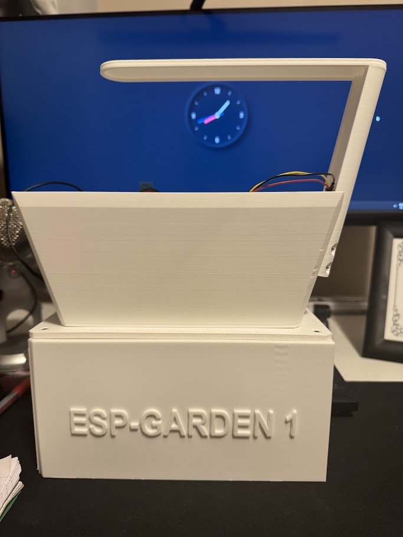
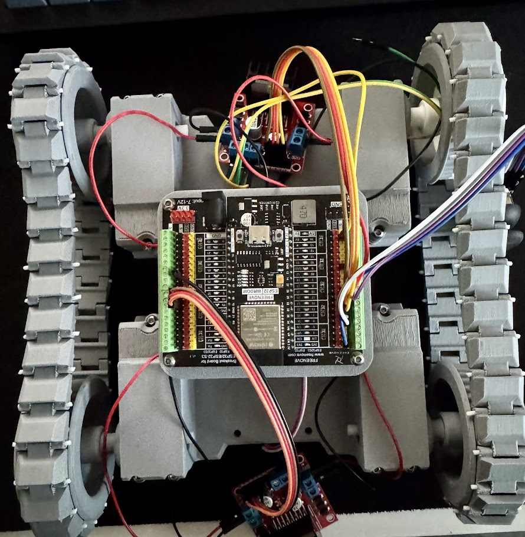
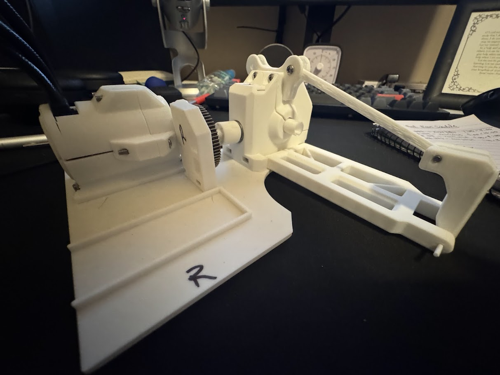

January 7th 2025
My name is Sayuj Stephen. I am currently a third year Mechanical Engineering Student at the University of Calgary. Over the past three years I've been curious about different things and tried my hands at projects to further develop my understanding and have some fun. Below is the culmination of those projects


What?
A Automated garden that is capable or measuring soil data and present this information and make decisions on when watering is required
How?
The ESP 32 Microcontroller was used in Arduino IDE. Using C++ I created a program that would measure the Capacity of the soil using a Capacity Soil Moisture Sensor v1.2.
With this information the ESP 32 then activates the water pump when the capacitive value reaches a certain threshold. In tandem with this a DHT11 humidity and temperature sensor along with a photoresistor was also added increasing the capabilities of the system to display humidity and temperature data
as well as control the LED lights when the light level in the room reached a certain level to simulate sunlight.
Results
This project was my first introduction to the ESP 32 and the ESP 32 breakerboard.This project was a sucess in that it is able to do eeverything that it was supposed to. It is able to make decisions based on the data from the soil.

Future Plans
In the future I hope to utilize the ESP 32 platform to add bluetooth connectivity to the garden. With this the garden will be able to display the information connected by the sensors directly onto the phone via an app.

What?
The goal of this project was to create a portable Arduino game console using the Arduino MEGA 2560
How?
Utilizing the Arduino Libray for the 3.5" LCD screen graphics and game logic was created for a flappy birds game. Additional buttons and joysticks were included for future expandability in gameplay.
The circuit was designed through trial and error. Including 3 pushbuttons, 1 joystick, 2 buzzers and one toggle switch. The concept of the game was to have the button input which would have the character move, but there would be
instances in the game where a "super jump" would be required to continue through the game and as such a second pushbutton was utilized. The third button was used for a pause feature. The buzzers play sounds as the game progresses, with
a initial loading screen, and actual game play.
Results
In conclusion I was a able to acomplish all the goals of the project. The final product sucessfully demonstated a portable Arduino game console using the Arduino Mega.
The game was smooth in operation, and portable as the requirements stated.

What?
Part designed for Stephens Blinds & Shades. Needed to design a bracket that would replace the existing ones. The goal of this this project was to design a cost
effective and easy to manufacture solution for the discontinued brackets.
How?
Using precise measuring tools such as digital calipers measurements of existing brackets where taken and modeled in SOLIDWORKS. This part was then 3D printed using the Bamboo Labs P1P. Using the 3D printed part as the basis, the tolerances where changed
and adjusted depending 3D printing requirements and fit with existing blinds.
Results
The result of this project was a faster and cheaper production method for the part. While retaining the same functionality. In roughly 30-35mins
1 part can be printed and the part was designed to be 3D printed without the need for any external supports, making the production of the part highly scalable.
Future Plans
Currently looking into other filaments that can improve the strength and surface finish of the brackets. The brackets are
currently being printed in PLA+, but other materials such as PETG, ABS, and Nylon are being considered.

What?
A Rover based on the ESP 32 dev module. This project aims to create a rover that can be controlled via bluetooth utlilzing ESP 32 functionalities. The final product
must be able to move about its surroundings autonomously using sensor data, as well as have the option to be controlled remotely.
How?
Utilizing the Freenove ESP 32 WROOM , and the ESP 32 breakerboard. 4 motors are connected to the L298N motor controller for control of the wheels. The wheels are connected to each motor directly. Steering is
achieved through independent motion of the wheels, using the same principle as tanks, with each side moving in opposite directions simultaneously.
Results
Current progress consists of the physical model being printed and assembled. Currently testing the circuit built using a joystick as input. Finding that there is uneven current draw between the motors through testing most likely
a result of contact between the motors and motor holders.


What?
This is the 4th latest iteration of the RC car. The goal of this project is to improve the previous issues with the last iterations of the RC cars which was the logevity of the gears.
As well as improving upon the steering system and integrating suspension components for dampening.
How?
Integrating metal gears into the geartrain to improve the reliability and functionality of the speed transfer. I am also developing a new type of steering system that is not directly connected onto the
steering links connected by a metal paper clip. Lastly using after market RC car shocks for dampening system to prevent sudden shocks to the RC car due to bumps at high speeds.
Results
Current progress includes sucessful iteration of the gear system and the motor. An additional differential was also integrated to improve the distribution of power to the rear wheels.

Current efforts are being put into the steering system which where tolerance issues is the major concern being addressed.

What?
This project aims to replace the flexible Gooseneck clamp of a Desk Lamp for a sleek and compact mounting solution. Currently the Flexible Gooseneck clamp
is too large and takes up too much room.
How?
The measurements of the lamp part was taken after disassembly of the lamp. Many design iterations were considered and modelled using SOLIDWORKS and then 3D printed to test fit and functionality.
Result
The picture above shows the final design of the product. The main lamp is mounted directly onto the computer monitor using hooks which attach directly onto the back of the monitor (Model on the left). The controls of the lamp is attached to the center of the monitor and held in
place using carefully designed extrusions which hold tension against the wall of the monitor and the cables that are present (model on the right). In conclusion through this project I was able to replace the Gooseneck clamp and
create a simple and effective solution, which as an added benefit also improved the cable management of the overall system.